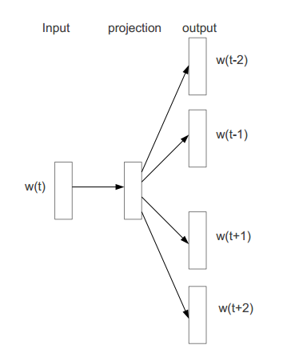

Running Word2Vec with Chinese Wikipedia dump
Similarity
- if two words have high similarity, it means they have strong relationship
"魯夫" is main charactrer in "海賊王" "東京" is capital city in "日本" - use wikipedia to let machine has general sense about our world
Related Application
- voice-driven assistants
(Siri, Google Now, Microsoft Cortana) - e-commerce recommandation
(Alibaba, Rakuten) - question answering(IBM Waston)
- others(Flipboard, SmartNews)
Related Application

Build you own smart AI
My current progress
Download Wikipedia
- https://dumps.wikimedia.org/zhwiki/latest/zhwiki-latest-pages-articles.xml.bz2
- it contains traditional chinese and simplified chinese articles
- 1G file size, 230,000 articles, 150,000,000 words
Preprocessing
- use OpenCC to translate from simplified chinese to traditional chinese
- support C、C++、Python、PHP、Java、Ruby、Node.js
- compatible with Linux, Windows and Mac
- “智能手机” -> “智慧手機”, “信息” -> “資訊”
- you can play it on the website http://opencc.byvoid.com/
opencc -i zhwiki.txt -o twwiki.txt -c /usr/share/opencc/s2twp.json
Preprocessing
- use gensim to extract article from Wikipedia dump
- 2G memory is required
Preprocessing
from gensim.corpora import WikiCorpus
if __name__ == '__main__':
inp, outp = sys.argv[1:3]
output = open(outp,'w')
wiki = WikiCorpus(inp, lemmatize=False, dictionary={})
for text in wiki.get_texts():
output.write(space.join(text) + "\n")
output.close()
gensim provides iterator to extract sentences from compressed wiki dump
Segmentation
- english uses some notation(whitespace, dot, etc) to separate words,
but not all language follow this practice - "下雨天/留客天/留我/不留", "下雨/天留客/天留/我不留"
- new word keep to be generated(such as "小確幸", "物聯網")
Segmentation
Jieba supports full and search mode
#encoding=UTF-8
import jieba
if __name__ == '__main__':
input_str = u'今天讓我們來測試中文斷詞'
seg_list = jieba.cut(input_str, cut_all=True) # full mode
print(', '.join(seg_list))
seg_list = jieba.cut(input_str, cut_all=False) # search mode
print(', '.join(seg_list))
今天, 讓, 我, 們, 來, 測, 試, 中文, 斷, 詞
今天, 讓, 我們, 來, 測試, 中文, 斷詞
Segmentation
sometimes the result is a little bit funny
#encoding=UTF-8
import jieba
if __name__ == '__main__':
input_str = u'張無忌來大都找我吧!哈哈哈哈哈哈'
seg_list = jieba.cut(input_str, cut_all=False)
print(', '.join(seg_list))
張無忌, 來, 大都, 找, 我, 吧, !, 哈哈哈, 哈哈哈
Segmentation
good dictionary, good result
#encoding=UTF-8
import jieba
if __name__ == '__main__':
input_str = u'舒潔衛生紙買一送一'
seg_list = jieba.cut(input_str, cut_all=False)
print(', '.join(seg_list))
jieba.set_dictionary('./data/dict.txt.big')
seg_list = jieba.cut(input_str, cut_all=False)
print(', '.join(seg_list))
舒潔衛, 生紙, 買, 一送, 一
舒潔, 衛生紙, 買一送一
Segmentation
verb? nouns? adjective? adverb?
#encoding=UTF-8
import pseg
if __name__ == '__main__':
input_str = u'今天讓我們來測試中文斷詞'
seg_list = pseg.cut(input_str)
for seg, flag in seg_list:
print u'{}:{}'.format(seg, flag)
今天:t 讓:v 我們:r 來:v 測試:vn 中文:nz 斷詞:n
Segmentation
keyword extraction
#encoding=UTF-8
import jieba
import jieba.analyse
if __name__ == '__main__':
input_str = u'我的故鄉在台灣, I am Taiwanese'
jieba.set_dictionary('./data/dict.txt.big')
seg_list = jieba.analyse.extract_tags(input_str, topK=3)
print(', '.join(seg_list))
jieba.analyse.set_stop_words('./data/stop_words.txt')
seg_list = jieba.analyse.extract_tags(input_str, topK=3)
print(', '.join(seg_list))
台灣, am, 故鄉
台灣, 故鄉, Taiwanese
Finding Similarity
- How to do that ? Word2Vec is super star !
Word2Vec
transform from word to vector, distance between vector implies degree of similarity
vector("首爾") - vector("日本") > vector("東京") - vector("日本")
vector("東京") - vector("日本") + vector("首爾") = vector("南韓")
Word2Vec
word2vec targets the word is asked to predict the surrounding context
在日本,[ 青森 的 "蘋果" 又 甜 ]又好吃
今年,新版的[ Macbook 是 "蘋果" 發表 的 ]重點之一
"青森" and "Macbook" have high simlaritiy with “蘋果"
training from previous window, "青森" and "日本" also have high simlaritiy
Word2Vec
word2vec uses skip-gram neural network to predict neighbor context
Training Word2Vec model by gensim
words already preprocessed and separated by whitespace.
#encoding=UTF-8
import multiprocessing
from gensim.corpora import WikiCorpus
from gensim.models import Word2Vec
from gensim.models.word2vec import LineSentence
if __name__ == '__main__':
inp = sys.argv[1]
model = Word2Vec(LineSentence(inp),
size=100,
window=10,
min_count=10,
workers=multiprocessing.cpu_count())
it doesn't work for me, gensim's word2vec run out of memory
Move to Spark MLlib
- Spark offer over 80 operators that make it easy to build parallel application
- Databrick company uses Spark to break world record in 2014 1TB sort benchmark completition
- MLlib is Spark's machine learning library.
Spark cluster overview
- Spark is master-slave architecture, which likes YARN
- cluster management is master, it handle resource managemnet and slave health management.
- when you launch application,
master will assign a slave to be driver.
driver request resource from master,
execute main function and assign task to slave

Spark cluster deployment
- use Linode API to create and boot new instance rapidly
- use standalone Spark cluster
it also can deploy on Mesos or YARN cluster - install Java,Scala and put pre-built Spark, finally launch slave executor!
- use ansible to deploy spark executor and use LZ4 to speed up decompress pre-built Spark package
Training Word2Vec model by Spark cluster
RDD is the basic abstraction in Spark.
Represents an immutable, partitioned collection of elements
that can be operated on in parallel
val input:RDD[String] = sc.textFile(inp, 5).cache()
val token:RDD[Seq[String]] = input.map(article => tokenize(article))
val word2vec = new Word2Vec()
word2vec.setNumPartitions(5)
val model = word2vec.fit(token)
sc.parallelize(Seq(model), 1).saveAsObjectFile("hdfs://....")
Querying Word2Vec model by Spark cluster
val model = sc.objectFile[Word2VecModel]("hdfs://....").first()
val synonyms = model.findSynonyms("熱火",10)
for((synonyms, cosineSim) <- synonyms){
println(synonyms+":"+cosineSim)
}
load model from HDFS
compare with model training, resource requirement is cheap on finding similarity
Query Word2Vec by Spark cluster
Example of "man"
Example of "luffy"(one piece comic's man charactrer)
Example of "cell phone"